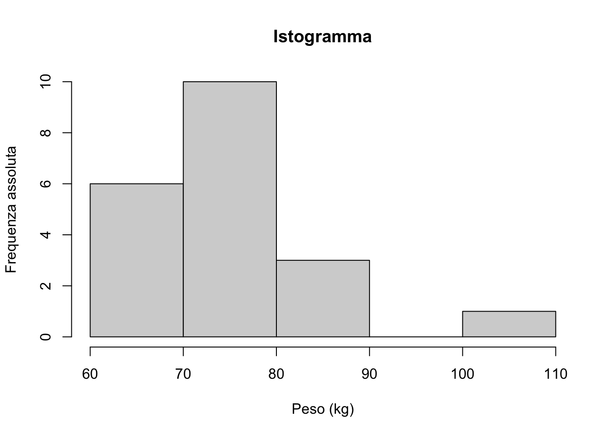
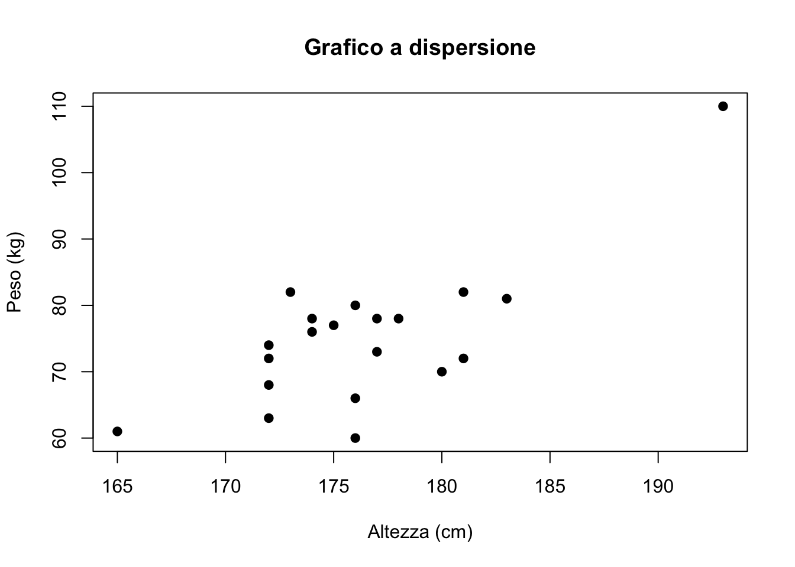
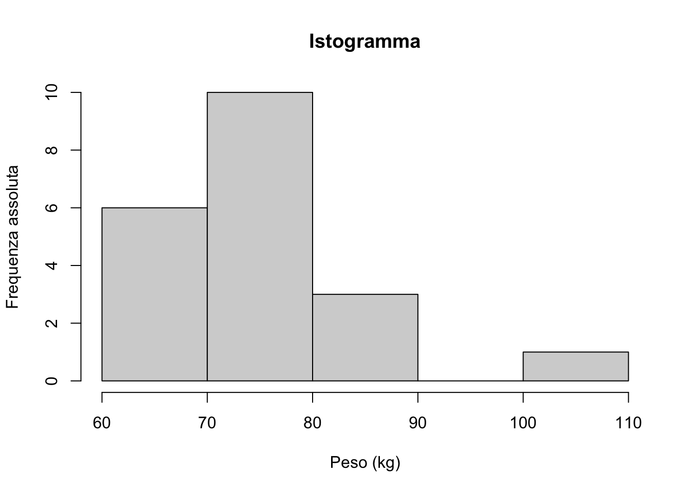
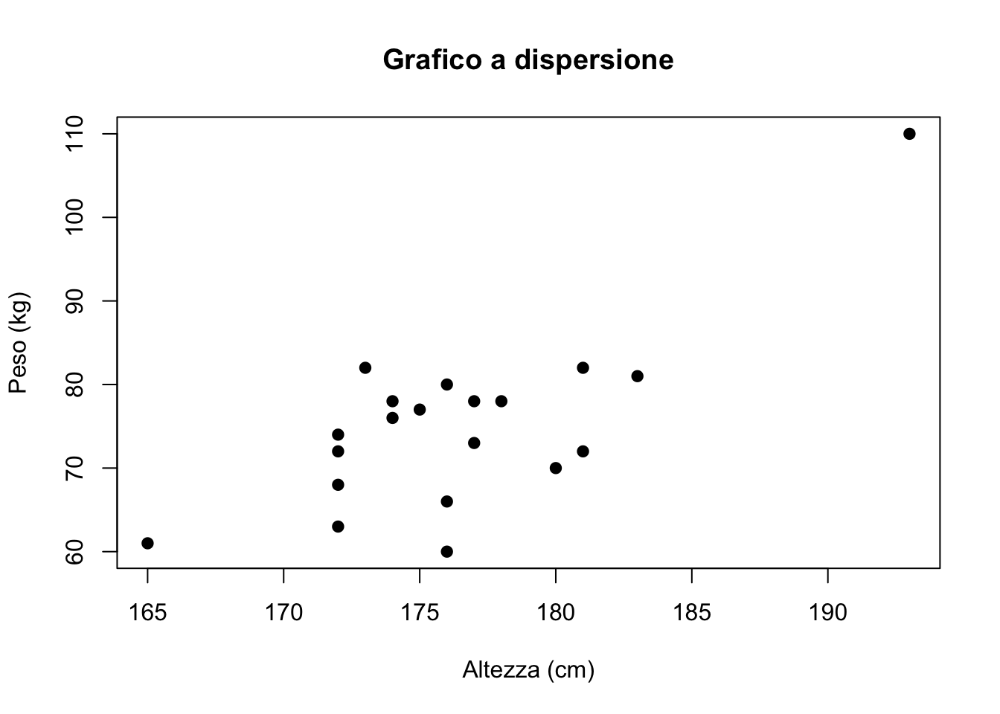

Alborghetti Alex
i dati nel grafico \(A\) hanno una correlazione pari a \(\rho = 0.7\),
i dati nel grafico \(B\) hanno una correlazione pari a \(\rho = 0.9\),
i dati nel grafico \(C\) hanno una correlazione pari a \(\rho = -1\),
i dati nel grafico \(D\) hanno una correlazione pari a \(\rho = 0\).
Alcune misure per descrivere la variabile peso, da qui in poi chiamata anche y:
Media = \(75.05kg\),
Primo quartile = \(68.00kg\),
Secondo quartile = \(74.00kg\),
Terzo quartile = \(78.00kg\),
Minimo = \(60kg\),
Massimo = \(110kg\).
Scarto quadratico medio = \(10.39kg\).
Calcoliamo poi l’indice di asimmetria di Fisher per la variabile peso:
\[ \gamma_y = \frac{1}{n} \sum_{i=1}^n \big{(}\frac{y_i - \bar{y}}{\sigma_y}\big{)}^3 = 1.541. \]
Tale variabile è dunque asimmetrica positiva. Qui sotto vengono riportati istogramma della variabile e grafico a dispersione tra peso e altezza.


Dal criterio dei minimi quadrati, il cui obiettivo è minimizzare la somma degli scarti al quadrato dalla retta che vogliamo costruire, possiamo spiegare la variabile risposta peso (\(y\)) a partire dalla variabile risposta altezza (\(x\)) tramite la retta di regressione tale che:
\[ y \approx \hat{\alpha} + \hat{\beta}x, \]
dove
\[ \begin{split} &\hat{\beta} = \frac{cov(x,y)}{var(x)},\\ &\hat{\alpha} = \bar{y} - \hat{\beta}\bar{x}. \end{split} \]
Calcoliamo quindi le quantità che ci servono (la media per la variabile \(x\) è stata calcolata e vale \(176.35\textit{cm}\)):
\[ \begin{split} &cov(x,y) = \frac{1}{n}\sum_{i=1}^n(x_i-\bar{x})(y_i-\bar{y}) = \frac{1}{20}\sum_{i=1}^n(x_i-176.85)(y_i-75.05) = 42.932, \\ &var(x) = \sigma_x^2 = 30.528. \end{split} \]
Allora \(\hat{\beta} = 1.406\), da cui \(\hat{\alpha} = -172.961\). La bontà di adattamento del modello ai dati si misura tramite il coefficiente di determinazione \(R^2\), che è definito come il complemento a \(1\) della proporzione di varianza residua rispetto alla varianza totale della variabile risposta:
\[ R^2 = 1-\frac{varianza\; residui}{varianza \;totale\; y}. \]
Si può dimostrare che tale coefficiente è esprimibile come il quadrato del coefficiente di correlazione (lo si faccia per esercizio). Allora, ci basta calcolare lo scarto quadratico medio di \(x\), calcolare \(\rho\) ed elevarlo al quadrato per trovare \(R^2\). Lo scarto quadratico medio di \(x\) vale \(\sigma_x = 6.319\). Allora, possiamo concludere che:
\[ R^2 = \bigg{[}\frac{cov(x,y)}{\sigma_x\sigma_y}\bigg{]}^2 = 0.559. \] Il risultato è stato arrotondato a tre cifre decimali. Il modello si adatta ai dati in maniera mediocre.
Il generico residuo \(r_i\) è definito in questo modo:
\[ r_i = y_i - \hat{\alpha} - \hat{\beta}x_i. \]
Vengono riassunti nella tabella che segue i residui del modello di regressione stimato nel punto precedente:
| y | Stima | Residuo |
|---|---|---|
| 78 | 75.964 | 2.036 |
| 68 | 68.932 | -0.932 |
| 72 | 81.590 | -9.590 |
| 66 | 74.558 | -8.558 |
| 73 | 75.964 | -2.964 |
| 78 | 71.745 | 6.255 |
| 82 | 70.339 | 11.661 |
| 80 | 74.558 | 5.442 |
| 74 | 68.932 | 5.068 |
| 76 | 71.745 | 4.255 |
| 70 | 80.183 | -10.183 |
| 63 | 68.932 | -5.932 |
| 60 | 74.558 | -14.558 |
| 77 | 73.151 | 3.849 |
| 82 | 81.590 | 0.410 |
| 61 | 59.088 | 1.912 |
| 78 | 77.370 | 0.630 |
| 110 | 98.466 | 11.534 |
| 72 | 68.932 | 3.068 |
| 81 | 84.402 | -3.402 |
Si noti che il tredicesimo individuo (\(y_i = 60\)) presenta un residuo più elevato in valore assoluto degli altri.
La varianza dei residui vale \(47.569\), il nuovo modello stimato senza il tredicesimo individuo ha un coefficiente di determinazione maggiore, di conseguenza possiamo dire che si adatti meglio ai dati.
Si ricorda che
\[ \mbox{var}(r) = \sigma_r^2 = \frac{1}{n}\sum_{i=1}^nr_i^2 = 0.001, \]
dato che la media dei residui è nulla. Inoltre, si sa che
\[ R^2 = 1-\frac{\sigma_r^2}{\sigma_y^2} = \bigg{[}\frac{\mbox{cov}(x,y)}{\sigma_x\sigma_y}\bigg{]}^2, \]
dove:
\[ \begin{split} &\sigma_y^2 = \frac{1}{n}\sum_{i=1}^ny_i^2 - \bigg{[}\frac{1}{n}\sum_{i=1}^ny_i\bigg{]}^2 = 0.025\\ &\sigma_x^2 = \frac{1}{n}\sum_{i=1}^nx_i^2 - \bigg{[}\frac{1}{n}\sum_{i=1}^nx_i\bigg{]}^2 = 0.001.\\ \end{split} \]
Allora, si può ricavare:
\[ \mbox{cov}(x,y) = \pm \sqrt{\bigg{[}1-\frac{\sigma_r^2}{\sigma_y^2}\bigg{]}\sigma^2_y\sigma^2_x} = -0.005. \]
(si prende il valore negativo per l’ipotesi di correlazione negativa) da cui:
\[ \hat{\beta} = \frac{\mbox{cov}(x,y)}{\sigma_x^2} = -5, \]
e, di conseguenza,
\[ \hat{\alpha} = \bar{y} - \hat{\beta}\bar{x} = 5.528. \]
L’indice \(R^2\), invece, vale:
\[ R^2 = 1-\frac{\sigma_r^2}{\sigma_y^2} = 0.96. \]